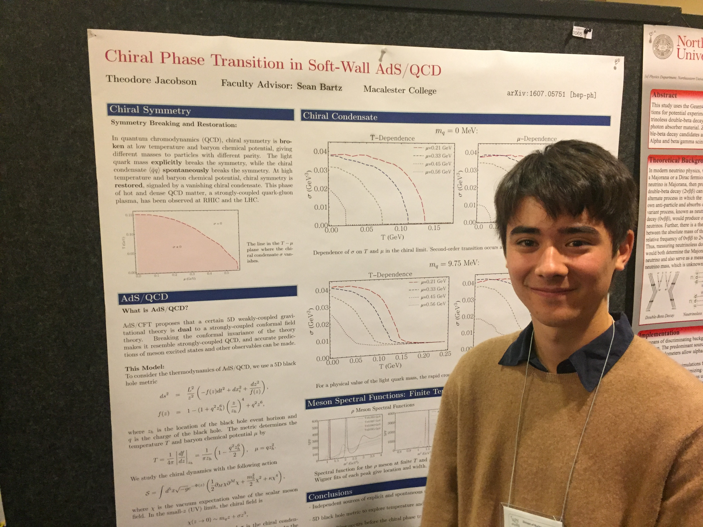

Meson Melting – Sean Bartz
Home / Meson Melting – Sean Bartz
Image credit: TU Wien
Theo Jacobson worked with me in the summer of 2016 and spring of 2017 on a project using the AdS/CFT correspondence to study the spectra of mesons at finite temperature and density. We co-authored a forthcoming article in Physical Review D (pre-print) that describes chiral symmetry restoration as temperature and baryon chemical potential increase.
This work provides clues for the behavior of strongly-bound particles interacting with a hot and dense medium, such as the quark-gluon plasma produced in heavy ion collisions.
Theo traveled with me to the 2016 meeting of the Division of Nuclear Physics to present a poster on this work. He received a travel grant and was selected to present his poster at the public night. Theo’s research is supported by the Beltmann Fund.
Theo plans to develop this research into an honor’s thesis during the 2017-2018 academic year.